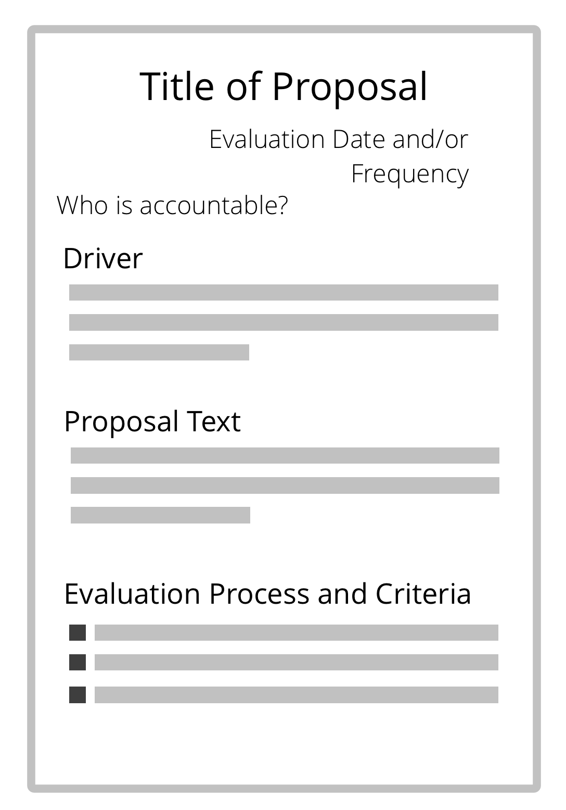

Élaboration d'une proposition

Un processus de groupe (facilité) pour co-créer une réponse à un moteur.
- repose sur l’intelligence collective et la diversité des perspectives au sein d’un groupe
- … implique les participants dans la co-création d’un accord
- … encourage la prise de responsabilité et l’appropriation
L’élaboration de propositions peut aussi être employée par un individu.
Processus d’élaboration d’une proposition
- Consentement au moteur : Est-ce qu’il est pertinent de répondre à ce moteur ? Est-ce que la déclaration motrice est une description exacte du contexte et des besoins ?
- Approfondir la compréhension partagée du moteur : invitez vos pairs à poser des questions essentielles pour mieux comprendre les détails du moteur.
- Récoltez les réflexions sous forme de questions, reliées à de possibles solutions. Les questions révèlent des contraintes (questions récoltant des informations) ou des possibilités (questions génératrices).
- Répondez à toutes les questions demandant des informations si possible.
- Priorisez les considérations.
- Récoltez des idées comme ingrédients possibles pour une proposition.
- Créez une proposition pour gérer un moteur, en prenant en compte les idées créatives et les informations récoltes. En général, c’est un groupe plus restreint qui gère cette étape (les accordeurs).
Sélectionner les accordeurs

- qui devrait y être ?
- qui veut y être ?
- qui d’autre pourrait apporter une contribution utile ?
- considérez l’expertise, le point de vue et l’inspiration
- y a-t-il des objections à constituer ce groupe ?
▶ Sélection des rôles
◀ Les personnes concernées décident
▲ Co-création et évolution